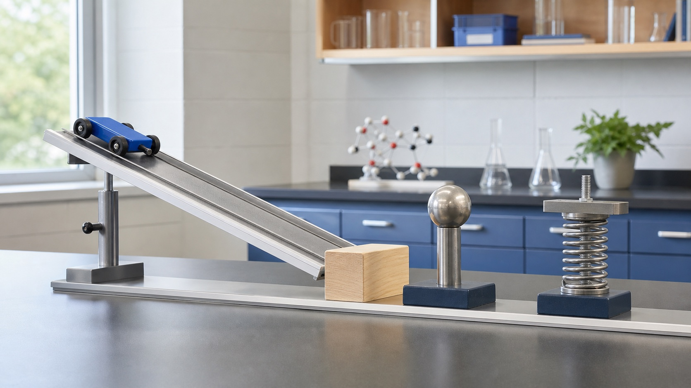

下降时势能转化为动能
有阻力时每次重新上升的高度会降低。

下册 · 第十一章 · 功和机械能
功记录力使物体沿力的方向移动了多少，功率比较做功快慢，机械能则描述物体凭运动、位置或形变具有的做功能力。
知识桥梁
速度影响动能，重力与高度关联重力势能。能量变化可以用“功”来量化。
第 1 节
判断某个力是否做功，必须同时满足：有力作用，且物体在这个力的方向上移动了距离。
不能只背“有力、有距离”，还要检查距离是否包含沿该力方向的分量。
s = 0静止托住时物体没有位移。
推力方向与箱子位移方向相同，可以直接用 W = Fs。
第 2 节
完成相同的功，用时越短，做功越快；相同时间内做功越多，做功也越快。
功率大不代表做功总量一定多，还要看持续时间。
第 3 节
运动、位置和弹性形变都可能储存做功能力；本节关注影响大小的因素，不要求记忆计算公式。
数值用于帮助理解质量、速度和高度怎样影响能量，不作为本章必须记忆的公式。
第 4 节
动能和势能统称机械能；不计摩擦和空气阻力时，机械能保持不变，动能与势能此消彼长。
能量链
最高点高度为 5 m，并以斜面底端为零势能面；数值模型取 g = 10 N/kg。
有阻力时每次重新上升的高度会降低。
蹦床形变增大时弹性势能增加，恢复时把人弹起。
高处水的机械能经水轮机转化为电能。
第十一章检查
完成 6 题，检查功、功率和机械能。